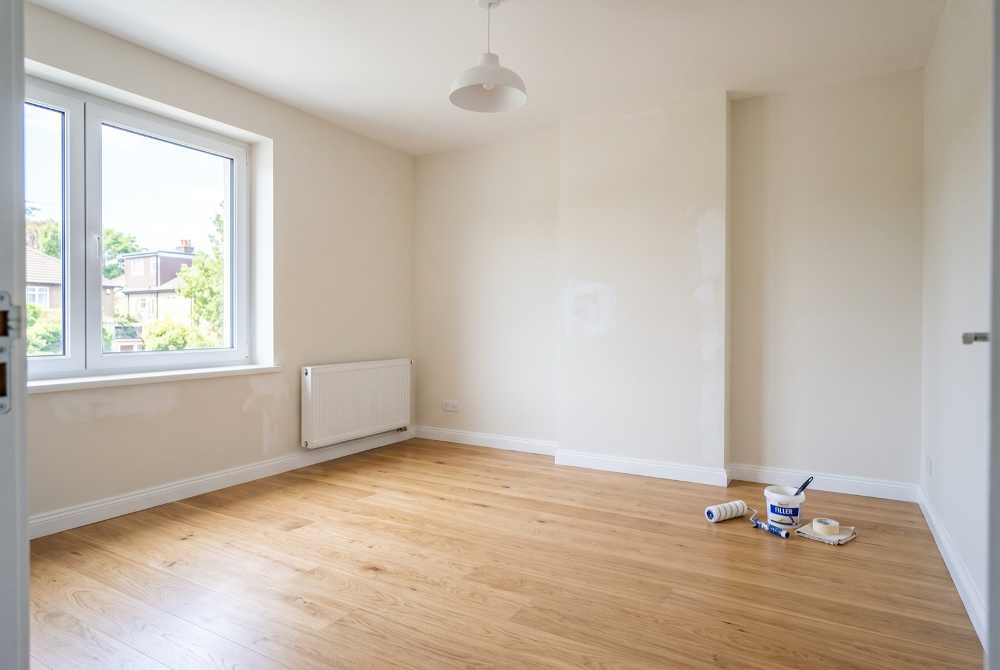

End-of-tenancy reinstatement & make-good in Singapore: what it costs

Moving out of a rented home in Singapore and worried about your deposit? End-of-tenancy reinstatement — the make-good work most tenancy agreements require — means handing the unit back in the condition you received it, allowing for fair wear and tear. That usually means patching wall damage, repainting, servicing the air-con and a proper deep clean before the landlord's inspection. Get it done well and your deposit comes back in full. This guide explains what reinstatement covers, what agents actually check, a real cost example, and why one contractor handling cleaning and repairs together beats juggling three trades.
What "reinstatement" and "make good" actually mean
Almost every tenancy agreement in Singapore has a reinstatement clause. It requires you, the tenant, to restore the unit to its original handover condition at the end of the lease — matching the check-in inventory and photos taken when you first moved in. The wording usually says something like "make good any damage" and "return the premises in clean condition, fair wear and tear excepted".
"Fair wear and tear" is the key phrase. Light fading of paint or minor marks from normal living are expected and shouldn't be charged. But nail holes from shelves you hung, deep scuffs, damaged mouldings, stains and a unit that needs a real clean go beyond that — and those are yours to put right. Making good simply means doing that work so the unit looks the way it did on day one.
Reinstatement sits alongside general handyman and cleaning work: the same visit often covers patching, repainting, small repairs and the move-out clean in one coordinated job.
What landlords and agents check at handover
The handover inspection is a walkthrough against the original inventory. A landlord or agent typically checks:
- Walls — nail holes, anchor holes, scuffs, marks and any patches that don't match the surrounding paint.
- Ceilings and corners — water marks, cracks, flaking and mould in the usual damp spots.
- Paint condition — whether repainting is needed and whether the colour matches the original.
- Fittings and mouldings — skirting, cornices and trim intact and properly reinstated.
- Air-conditioning — serviced and working, filters clean, no musty smell.
- Overall cleanliness — inside cabinets, the oven, bathrooms, windows and floors.
Anything worse than fair wear and tear can be deducted from your security deposit — often at the landlord's own contractor rates, which you don't control. That's the core reason to do the make-good yourself, first.
A real cost example: a recent RK E&C job
To make the numbers concrete, here's the breakdown from a recent RK E&C reinstatement — a 689 sqft condo at move-out, handed back to the landlord in full make-good condition. Treat these figures as indicative; your cost depends on the size of the unit and how much damage there is.
| Item | Cost (SGD) | What it covered |
|---|---|---|
| Deep / move-out cleaning (whole unit) | ≈ $500 | Kitchen, bathrooms, cabinets, windows, floors |
| Air-con cleaning — 4 units @ $25 | $100 | Chemical wash of filters & coils, 4 fan-coil units |
| Reinstatement & make-good | ≈ $400 | Patch wall damage / holes / scuffs, fill & prime, repaint living, dining & bedrooms, make good ceilings & corners, remove & reinstate damaged moulding, materials, final clean |
| Total | ≈ $850 – $950 | One team, one coordinated visit |
For under a thousand dollars, this tenant handed back a unit that passed inspection cleanly and recovered a deposit many times that amount. Prices are indicative and depend on the damage and unit size — a lightly-used studio costs less; a heavily-marked larger unit costs more.
Common tenant damage that needs making good
Most reinstatement jobs come down to the same handful of issues:
- Nail and anchor holes. From shelves, mirrors, TV brackets and wall art. Each needs filling, sanding and repainting to blend — a dab of filler on its own is obvious against clean paint.
- Scuffs and marks. Furniture rubbing, handprints around switches, drag marks near doors. Often the whole wall needs a coat to look even.
- Damaged mouldings and skirting. Knocked corners, dented cornices, trim that's come loose. These are removed and reinstated so the lines are clean again.
- Air-con neglect. Unserviced units that smell musty or drip are a common handover flag; a chemical wash resolves it.
- Ceiling and corner marks. Water staining, hairline cracks and flaking near windows and bathrooms that need making good before repainting.
Why one team beats a cleaner, a painter and a handyman
It's tempting to book the cheapest cleaner, then find a painter, then a handyman for the odd jobs. In practice that route quietly costs more and creates gaps:
- Three trip charges instead of one. Each trade has a minimum call-out; bundling spreads a single visit across the whole job.
- Correct sequencing. Patch and repair first, paint next, then the final clean over the top. Split across three bookings, the cleaner often comes before the painter and the fresh dust and paint spatter undo the clean.
- One point of accountability. If a mark reappears or a patch shows, you go back to one team — not a three-way argument about whose job it was.
- Faster to handover. One coordinated schedule finishes days sooner than lining up three separate contractors around your move-out date.
That's the whole idea behind combined move-out cleaning and reinstatement: the walls are made good, repainted and the unit deep-cleaned in one pass, ready for inspection.
Timeline: getting it done before handover
Reinstatement should be scheduled around your move, not squeezed in on handover morning. A workable sequence:
- Move your furniture and belongings out first. Empty rooms let the team reach every wall and clean properly.
- Book the make-good and clean for two to three days before handover. That gives paint time to dry and cure, and a buffer for touch-ups.
- Do a walkthrough with the finished unit. Compare against your check-in photos and fix anything that stands out.
- Take dated photos of the final condition before you return the keys, in case of any later dispute.
During peak moving periods, book about a week ahead — good contractors fill up fast at month-end.
How to avoid deposit deductions
The tenants who get their full deposit back tend to do the same things:
- Make good before the handover inspection, so the landlord never needs to arrange work and bill your deposit at their own rates.
- Repaint so patches match — a visible patch reads as damage even when the hole is filled.
- Service the air-con and deep clean the whole unit, including the spots people forget: oven, cabinet interiors, window tracks.
- Keep your check-in inventory and photos to hand, so you can push back on anything charged as damage that was fair wear and tear.
If a dispute does arise over deposit deductions, the Consumers Association of Singapore (CASE) offers guidance on tenancy and consumer matters. For HDB-specific rules on renting out and returning flats, see HDB's official website.
Getting it done by RK E&C
RK E&C is a Singapore-registered renovation and handyman company (UEN 202442767D) that handles end-of-tenancy reinstatement across HDB flats and condos island-wide. One team makes good the walls, repaints, services the air-con and deep cleans the unit — coordinated in a single job so it's inspection-ready. It pairs naturally with our move-out cleaning checklist and our guide to repainting costs for an HDB flat, and you can see the full range on our guides page.
Send us photos of the unit and its condition and we'll assess it for a fixed quote — usually the same day.
Moving out soon?
Send photos of your unit and your postal code. Cleaning, make-good and repaint in one fixed-price job — deposit-ready, island-wide.
Prices are indicative of a recent RK E&C job and the Singapore market in 2026, not a quotation. Costs depend on the damage and unit size — confirm a fixed price after an assessment before work begins.